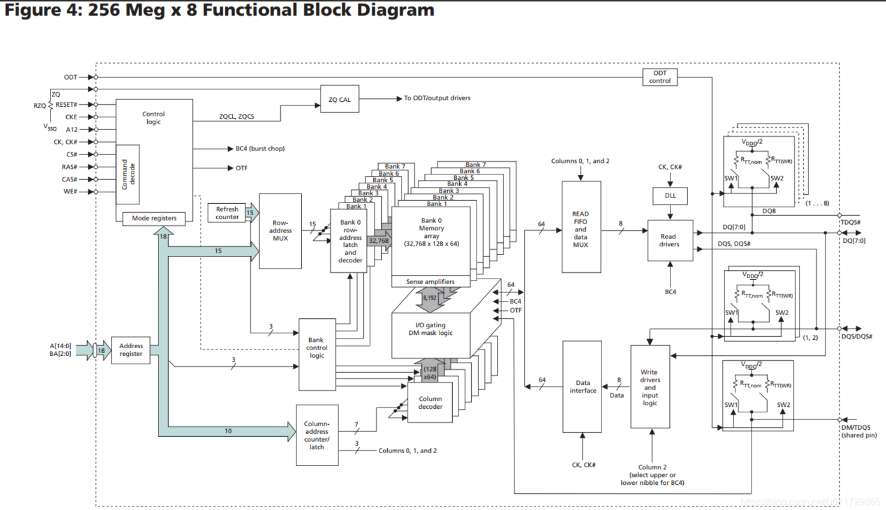

DDR Introduction
[toc]
Introduction
SDRAM vs. SRAM
-
Synchronous Dynamic Random Access Memory
-
Static RAM

片内通常用SRAM，片外用SDRAM。

DDR3 SDRAM电路结构高清图

- 左上是命令信号，下面是地址，18b长度；
- 地址存到地址寄存器；
- 8个bank -> BA[2:0], 3个bit表示8个结果；
- 行选择，地址A，15b长度；
- 列选择，长度10b;
- 8192： 一行存储的电荷容量；
行地址（Row Address）：16位（A0-A15）
列地址（Column Address）：10位（A0-A9）
Bank地址（Bank Address）：3位（BA0-BA2）
4个时钟周期，上升下降都传输，8比特。

256Mb Configuration
| 参数 | 256Mb x 4 | 128Mb x 8 | 64Mb x 16 |
|---|---|---|---|
| # of Banks | 8 | 8 | 8 |
| Bank Address | BA0 - BA2 | BA0 - BA2 | BA0 - BA2 |
| Auto precharge | A10/AP | A10/AP | A10/AP |
| BC switch on the fly | A12/BC# | A12/BC# | A12/BC# |
| Row Address | A0 - A13 | A0 - A13 | A0 - A12 |
| Column Address | A0 - A9,A11 | A0 - A9 | A0 - A9 |
| Page size | 1 KB | 1 KB | 2 KB |
2Gb Configuration
| 参数 | 512Mb x 4 | 256Mb x 8 | 128Mb x 16 |
|---|---|---|---|
| # of Banks | 8 | 8 | 8 |
| Bank Address | BA0 - BA2 | BA0 - BA2 | BA0 - BA2 |
| Auto precharge | A10/AP | A10/AP | A10/AP |
| BC switch on the fly | A12/BC# | A12/BC# | A12/BC# |
| Row Address | A0 - A14 | A0 - A14 | A0 - A13 |
| Column Address | A0 - A9,A11 | A0 - A9 | A0 - A9 |
| Page size | 1 KB | 1 KB | 2 KB |
DDR4 SDRAM电路结构高清图

行地址（Row Address）：16位（A0-A15）
列地址（Column Address）：10位（A0-A9）
Bank地址（Bank Address）：2位（BA0-BA1）
Bank组地址（Bank Group Address）：2位（BG0-BG1）
DDR5 SDRAM电路结构高清图

行地址（Row Address）：16位（A0-A15）
列地址（Column Address）：10位（A0-A9）
Bank组地址（Bank Group Address）：2位（BA0-BA1）
Bank地址（Bank Address）：3位（BG0-BG2）
命令地址（Command Address）：统一使用CA总线
存储层次
- Channel：处理器的内存控制器的通道数量
- Module：内存条，可以有多个内存条连接到同一个 Channel 上
- Rank：多个 DDR SDRAM 芯片在宽度上拼接起来，一个 Module 上可以放下一到四个 Rank，这些 Rank 共享总线，每个 Rank 都有自己的片选信号 CS_n，实际上就是在深度上拼接 SDRAM 芯片
- Chip：也就是一个 DDR SDRAM 芯片，例如一个数据位宽是 64 位的 Rank，是使用 8 个 x8 的 Chip 在宽度上拼接而成
- Bank Group：DDR4 引入，通过 Bank Group 掩盖 DDR4 同一个 Bank Group 内连续读的延迟 tCCD_L
- Bank：每个 Bank 同时只有一个 Row 被激活，通过多个 Bank 掩盖 Activate/Precharge 的延迟
- Row：Activate/Precharge 的单位
- Column：每个 Column 保存 n 个 Cell，n 是 SDRAM 的位宽
- Cell：每个 Cell 保存 1 bit 的数据
一些概念
Page的概念
- 行（Row）和列（Column）：DDR内存被组织成一个二维数组，分为行和列。每个单元格存储一个位或几个位的数据。
- Page（页）：一次性可以被同时激活的行称为一页。当一行被激活后，内存控制器可以快速访问该行内的所有列数据，这样可以减少访问延迟。
- 页大小：页的大小通常由行的宽度和列的宽度决定。例如，如果一行有1024个单元格，每个单元格存储一个字节，那么这一页的大小就是1024字节。
为什么上面表格中有一个是2K page呢，因为它一行中1024个单元，但是是x16的，也就是2个B，所以是2KB。
8N预取
内部总线是32位，外部是4位；8倍的关系，就是8N；
读操作，一下取32位，由并转串，发出去；
内部时钟是慢的，外部时钟是快的；
内存训练
地址和控制信号使用的是菊花连，数据信号（DQ、DQS 和 DM）使用的是并行。

fly-by的方式导致不同DRAM看到波形不同，有不同的延迟，越远延迟越大。需要在控制器侧加一些延迟，让数据对齐。
CLK/CLK#、DQS、AD和CMD信号不需要同时传递，改善了信号完整性，使更高频率成为可能。
DQ走的是并行。
地址行有效，列有效以后，第一颗芯片很快就准备好了数据，放到DQ上了，第8颗需要等很久才准备好。如果都准备好了，kua的一下，DQ去采样，就好了。就需要训练。
Write Leveling
这部分解决 Fly-by Topology 带来的延迟不一致问题。
让 SDRAM 芯片接受到的 DQS 信号与 CK 信号同步。也就是确保所有数据线（DQ）和数据选通信号（DQS）在到达内存模块时是同步的。
DQS（Data Strobe）信号和CK（Clock）信号是关键的时钟和数据同步信号，用于确保数据的准确传输和接收。
DQS信号：是数据选通信号，用于同步数据传输，确保数据在正确的时刻被锁存，用于在数据传输过程中指示数据有效时刻。它在读写操作中分别由内存模块和内存控制器生成，并与数据一起传输。
CK信号：提供时钟基准，控制所有同步操作。数据在时钟信号的上升沿和下降沿都被传输，实现双倍数据速率。
DQ信号：负责传输内存读写操作中的实际数据。每一条DQ信号线对应一个数据位。
简单来说，就是内存控制器不停的发送不同时延的DQS 信号，内存 颗粒在DQS-DQS#的上升沿采样CK 的状态，并通过DQ 线反馈给DDR3 控制器（一组01010101的数据）。控制器端反复的调整DQS-DQS#的延时，直到控制器端检测到DQ 线上0 到1 的跳变控制器就锁住此时的延时值，此时便完成了一个Write leveling过程。
过程：
- 设置 SDRAM 进入 Write Leveling 模式，此时 SDRAM 会使用 DQS 对 CK 采样，把结果输出到 DQ
- 控制器枚举 DQS 的延迟，读取出每个 DQS 延迟下的 DQ 结果，得到一个 0-1 串，例如：
001111111111111111110000，即随着延迟增大，先采样到 0，再采样到 1，最后又采样到 0 - 找到一个 DQS 延迟，使得 DQ 出现一个从 0 到 1 的变化，那么按照这个延迟输出，DQS 就会与 CK 同步
- 设置 SDRAM 结束 Write Leveling 模式
Read Leveling
对于读操作，数据是从 SDRAM 发送给控制器，不同的数据到达控制器的时间可能也不同，因此也需要对读操作进行校准。
为了判断读取的数据是否正确，做法是首先写入已知的数据，然后再读出来，如果读取的数据和写入的数据完全一致，就说明可以正确地进行读操作。
过程：
- 写入数据（或者用 SDRAM 的生成固定 Pattern 输出的功能）
- 设置延迟从 0 开始循环，不断增大
- 在每个延迟的设定下，读取出数据，把读取的结果与之前写入的数据进行比较
- 统计出哪些延迟条件下，读取数据是准确的，准确的记为 1，不准确的记为 0
- 找到表示准确的 1 的范围，取中点作为最终的校准结果
注意这里不再是找到 0-1 的变化的地方，Write Leveling 找 0-1 变化是为了同步，同步的地方正是 0-1 变化的地方；而 Read Leveling 的目的是要读取出正确的数据，已知有一段连续的延迟区间，区间内都可以读出正确的数据，那么取其中点，即使因为温度等条件变化，区间出现移动，因为保留了足够的余量，所以依然可以工作。取中点这一步也称为 Read Centering。
Spec
SDRAM 相关标准由 JEDEC 制定：
- JESD79F: DDR SDRAM
- JESD79-2F: DDR2 SDRAM
- JESD79-3F: DDR3 SDRAM
- [JESD79-4D: DDR4 SDRAM](https://www.jedec.org/document_search?search_api_views_fulltext=jesd79-4 ddr4)
- JESD79-5B: DDR5 SDRAM
除了 DDR 系列，还有低功耗的 LPDDR 系列：
- JESD209B: LPDDR SDRAM
- JESD209-2F: LPDDR2 SDRAM
- JESD209-3C: LPDDR3 SDRAM
- JESD209-4D: LPDDR4 SDRAM
- JESD209-5B: LPDDR5 SDRAM
高性能常用的 HBM 也基于 SDRAM 技术：
还有 GDDR SGRAM 系列：
- SDRAM3.11.5.8 R16.01: GDDR4 SGRAM
- JESD212C.01: GDDR5 SGRAM
- JESD232A.01: GDDR5X SGRAM
- JESD250D: GDDR6 SGRAM
参考：
https://www.cnblogs.com/sky-heaven/p/15948268.html
https://zhuanlan.zhihu.com/p/26327347